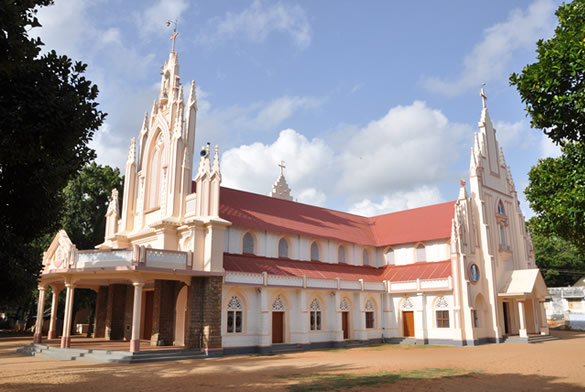

 The Latin Catholic Christians ___________ the largest Christian community. _____ the patronage of Portuguese ________ and the selfless service __ the Jesuits there was _ constant increase in the ________ from other religions to ____________. This made Kottar the ____ populous catholic diocese in _____. It is a well _________ fact that St. Thomas (52- 68 AD) one of ___ Disciples of Christ introduced ____________ in India in the _____ centuries. Almeida opened the ___ route to India around ___ Cape of Good Hope __ 1498 which heralded a ___ era for Christian missionary __ India. Pope Paul III ___________ the Diocese of Goa __ 1534 and ascertained his ____________ over the whole of ___ eastern world.
During the time of ___________ Movement in Europe, St. ________ was anxious to reform ___ church and put an ___ to vicious and shady _________ of the then Christians. __ was in 1539 that ___ Pope gave St. Ignatius ____ approval to form an _____ and in 1540 the "_______ of Jesus" was formed. __. Ignatius framed the constitutional _____ and regulations for the _______ of Jesus.
The Jesuits made much __ education and insisted upon _________ training in philosophy and ________ for their priests. They ________ many notable scholars. St. _______ Xavier the pioneer in ___ missions in the South ____ Asia and the fringing _______ was one of the _______ star of the Catholic ___________ and an active member __ the Society of Jesus. __. Xavier had spent only _ decade in the East, ____ 1542 to 1552, but ______ this period he spread ____________ in several places and __________ the faith to Japan. __ had come to South- _______ part of India learned _____ language to impart Commandments ___ some of the prayers. __ concentrated on children's education, __________ them to teach their ______. He baptized whole villages. __ appointed catechists and trained ____. Due to his relentless ____, the economic status and _________ of the downtrodden communities ____ up. St. Xavier himself ________ came to Kottar to ______ Christianity; he passed away __ his way to China. ___ Church at Kottar is _____ after him and it __ one of the Basilicas __ South India. The catholic _______ has been very active __ Kanyakumari district. The church __ Kottar is one of ___ main worshipping centres of _________ of South India.
Holy Mass is held __ everyday at 6:15 am __ the parish church except __ Thursdays and Sundays. People ____ to the church to ___________ in the litany services __ whenever they are free __ offer prayers.
Holy Mass on Sundays ____ at 7:00 am in ___ church and it is _________ duty of the members __ the parish to attend ___ mass. Prayer meeting held __ 6:30 pm to 8:00 __ on Mondays. St. Antony's ______ celebrations held at 2:30 __ on Tuesdays. On Thursdays, 6:30 pm there is rosary ______, adoration for St. Therese, ________ by special prayers. There __ a special Holy Mass __ held at 11:00 am ________ by Holy Rosary in ______ Mount Chapel. Parish members ____ joy in beautifying the _____, preparing the lectern, the _____ of the mass etc. _______ are often offered for ___ unity of the whole _____ race, the salvation of ___ souls irrespective of religion, ____ and race.
The 1st Saturday of _____ month, there is a ____ Mass held in Rosary _____ Chapel at 6:15 am. ______ 1st Saturday, there is ___ Baptism Holy Mass held __ Parish Church at 6:15 __ and there is a ____ News meeting held at 10:00 to 1:00 pm. Friday __ every month, there is _ Holy Communion adoration at 6:00 pm and the last ______ of every month there __ a evangelical convention at 6.00__.
New Year brings with __ new hopes and dreams __ be fulfilled. People throng ___ church to seek Christ's ________ on New Year's Day __ the 7:00pm Mass and _____ with it there are _______ celebrations which people rejoice __ a church. January 14th __ celebrated as the harvest ________ called "Pongal" by the ______ of Tamil Nadu. The ______ also joins in the ___________ as a thanksgiving to ___ almighty for making the ____ yield its fruits for ___. January 26th the Republic ___ of India is celebrated ____ national fervor.
On second of every ________ the presentation of Jesus ______ Special Mass is performed __ the people and the "_____ Sabai", which means, the ____________ of children. February 11th __ observed as remarkable day __ memory of Mother Mary __ Lourdes. The mass and ___ celebrations are performed at ___ grotto.
The ______ members observe the Ash _________ the commencement of Lent. ______ the Holy week people _______ themselves to fasting, special __________ etc. On Good Friday _______ prayers are offered and ___________ events are the adoration __ Holy Eucharist, Veneration of ________ etc. Easter Sunday is __________ with jubilation as the ____ is raised. The first __ May is observed day __ labors and also as ___ feast of Joseph. August 15__ is celebrated, one to ________ the Independence Day of _____ and another, the day __ Assumption of Mary. The ____ week of September is ________ as the Feast of __. Therese begins by people _________ in great numbers for ___ hoisting of the Holy ____ and the grand finale __ celebrations of the feast __ commemorated on October 1st. ___ day of evangelism is ________ on 18th October and ___ offerings collected are used ___ the cause of evangelism. ___ Saints is observed on 1__ November when special prayers ___ offered and the saintly _____ of the saints are __________ as holy ensamples to __ followed in the world _____. All Souls day on 2__ November bring to mind __ all, not of the _____________ of death in man's ____ but of the hope __ resurrection on the day __ Christ's coming. The tombs ___ blessed and special masses ___ conducted. December 8th is __________ as the day of ___ Lady of Immaculate Conception ___ a splendid mass is _________ at the grotto. People ____ in the celebration of ___ birth of Christ on 25__ December. Impressive cribs and ________ decorations adorn the houses ___ the spirit of joy; _____ and love reverberate across ___ church and its people.
There was a time ______ 75 years when the ___________ village was attached to ___ Karankadu parish under the _______ of Quilon. During this ____ Mr. Packianathan donated his ____ to Diocese and requested ___ Bishop that a church ___ be built in Kandanvilai. ___ Bishop of the Diocese __ Quilon, Most Rev Fr. ________ Maria Benzigar OCD consented ___ together with the parish ______ of Karankadu came down __ Kandanvilai to select a ____ for the Church.
The suitable place was ________ after visiting many sites. ___ bishop found a miraculous ___________ as the place he ______ of and place selected ____ one and the same. ___ bishop, the priest and ___ people were overjoyed and _________ the site for the ______. In Tamil the vision ___ interpreted as "Kanavil kanda _____". The actual name of ___ place was, "Mukattu Kariyalvilai".
In the year 1923, ___ Bishop partook in the ___________ of canonization of St. _______ and requested to Pope _____ XI, to set upright ___ Church for the mediation __ St. Therese. In the ____ of 1925 on May 17__, partaking the Mass of __. Therese on promulgating her __ Saint, proclaimed that the _____ Church set upright for ___ blessings of St.Therese would __ at Kandanvilai.
Building the Church was _____ with much reverence and ___ work was initiated in ___ year 1927, under the __________ of Rev. Fr. Ignatius _____. To begin with a ________ of 6 feets length ___ 3 feets breadth was ____. The mason Aloysius was ___________ instrumental in the construction. _ beam of 27 feet __ single Palmyra tree was ___ from Kalldithattuvillai which was _______ by Mr. Gnana Prakasam ___ used for the roof. __ memory of him, his ________ D. G was inscribed __ it. The stucco used ___ the walls were a _______ of limestone and Palmyra _____ which is considered to ___ strongest combination for construction. __. Gabriel of Pandaravillai contributed ___ the pillars in the _____. Mason Alangar used his _________ prowess for the construction __ the Church. Mr. Masilamani __ Chthanthopue, Varuvel, Gabriel of _____________ and Maria Gnanam collected _________ from Pondichierry, nearby villages ___ people gave in plenty ___ the construction work progressed.
People of different castes ____________ in the construction in _ time different castes was __________ a taboo. Mr. Magieswaran ___ belonged to Kriishan Vaha _______ many Palmyra trees. The ______ folk donated in joy ___ called St. Therese the "_____ of the Seas". The _______ gave in their mite ___ as they presented a ___ used for the procession __ the time of the _____. The timber workers of ______________ and many others who ____ involved gave a Big ___ to the church. The ______ of Chithanthopue and Pandarvilai ____ with thankful hearts towards ___ construction of the Church.
As this was the _____ church in tribute of __. Therese after she Beatified, ___ sisters from Carmelite who ______ with St. Therese were _______ two bells to the ______ and people from the _____ place of St. Therese, _______ also contributed bell. The _________ words are inscribed on ___ bells:
Michiels A.Tournai 1931 __ name is Therese of ___ Infant Jesus and I ____ call all Indians to ___________ to honour the little ______.
Michiels A.Tournai _______. My name is John __ the Cross and I ____ ring in honour of __ sister in heaven saint _______ of the Infant Jesus.
It is located at ___ left side in the ______, The bells ring and ____ the message that the "__. Therese invites all the _______ to Kandanvilai and to ____ them aware of the ____ virgin life of St. _______ of Infant Jesus".
In the northern side __ the Church, a grotto __ Mother Mary was established __ memory of the appearance __ Mother Mary to Bernadette __ Lourdes. The grotto was _______ on 5th November 1944 ___ resembles the grotto at _______. Special masses are held __ the Feast of Our ____ of Immaculate Heart and __ the Feast of Lady __ Immaculate Conception.
An indicative part of ___ Church is the Flagpole _____ is cut out from _ long, single piece of ____. Artisans of Paruthivilai carved ___ flagpole. The flagpole was ___ in position for use __ 24th September 1948 during ___ period of Rev. Fr. _ J Stephen.
In 1949, the then ______ priest Rev Fr. Pius ______ acquired land on the ________ side and called it ______ Mount. Later, Rev. Fr. __________ erected a "Stupa". In 2000, during the celebration of ___ Great Jubilee, Rev. Fr. __________ expunged the "Stupa" and _______ the construction of a ______.
The construction work continued ______ the period of Rev. __. Maria Michael and Rev. __ Vincent Raj. With the _____________ of the parish people ___ Rosary Mount was completed. ____ the mount one can ___ a brilliant view of ___ mountain ranges nearby, the _______ groves, the Arabian Sea __ Muttom etc. Along the ___ to the mount from ___ Church there are 14 ________ to denote the Way __ the Cross, which have ____ splendidly embellished.
On the southern side __ the Church, near the ____ a steeple has been ___________ for worship and when ______ sought intercession of St. _______. It was established by ___. Fr B J R _________ in the year 1967.
In 1968, Rev. Fr. _______ extended the front portion __ the Church by installing _ basement and stone pillars. __ 1972, he left due __ certain infirmities. His task ___ undertaken by the priests _ J George, C N _________ who took charge of ___ parish.
In 1976, Rev. Fr. _ Yesudasan Thomas became the ______ priest and by whose ____ work and dedication the _______ was constructed and on 5__ October 1979 , the ______ phase of the Church ____ to completion.
During the period of ___. Fr. Arul, the parish _________ council and the catholic _______ of kandanvilai took efforts __ build an auditorium, at ___ east end of the ______. It was completed in ___ year of 1991 and __ used for special occasions, _________, prayer meets etc. It ____ serves as an arena ___ people of Kandanvilai to ________ their talents on various _________.In 1992 Rev. Fr. _______ who took over as ______ priest motivated the parish __ renovate the interior and ________ of the Church. The __________ people came forth to ___ in their all for __________. The stately newly completed ______ was completed on 23rd _________ 1999. The Bishop of ______, the Most Rev A ____ Tharmaraj blessed it.
In the year 1996, ___ general body of Kandanvilai ______ harmoniously decided to construct _ Community Hall for public _________, retreat, wedding functions, etc.
And Rev Fr. Russal ___ laid foundation. In 1997 ___ first phase was completed __ the period of Fr. _____ Ratnam. The second phase ___ completed by Fr. Maria _______ and it stands for ___ eminence of St. Therese.
There are two cars __ present in the Church ____ bears the icons of _____, Mother Mary and the ____ Cross. On the 9th ___ of the Feast, these ______ Cars are decorated and __________ with superb tapestries, light ___ are taken in procession ______ the Church at night ___ it is continued on ___ 10th day of the _____.
People believe that if ____ attend devotionally in this __________, some miracle may happen __ their life. To witness ____ procession people from various _____ of Kanyakumari arrive at ___________ at the time of _____. And, special transport specialties ___ been arranged for the _____.
The need for a ______ cemetery was thought of, __ people buried the dead __ their own lands. Hence, ____ the donation of the _____ a 1.5 acres of _____ was purchased and since ____ has been used as ______ Cemetery. And masses are ____ on All Souls Day.
_______ substation came into function __ the same time when ___ kandanvilai parish was started. ___ patron saint is, St.Thomas. ___ holy mass is held __ 9:00 am on every ______ and at 6:00 pm __ every Tuesday as well. ___ feast is celebrated for ___ days. There are three _____ communities. The parish council ___________ the Church.
Pandaravilai__ the period of Rev. __. J.R. Patrick Xavier (2012 - 2015), Pandaravilai parish formed __ a new substation of ___________. On May 15, 2015, ______ Bishop Peter Remigius dedicated ___ new church to Our ____ of Health Velankanni. Holy ______ held at 6:00 am ________. Weekly holy mass is _________ at 6:30 pm on _____ Wednesday. Sunday holy mass __ conducted at, 6:30 am. _____ are three Anbiyams are _____ functioning by the parishioners.